Ogni contributo verifica fonti primarie e indica cosa cambia per il destinatario. Mai marketing, mai pareri travestiti.
Il Tribunale di Catania ha ribadito un principio spesso frainteso: le delibere condominiali meramente preparatorie non possono essere impugnate. Senza un effetto economico concreto…
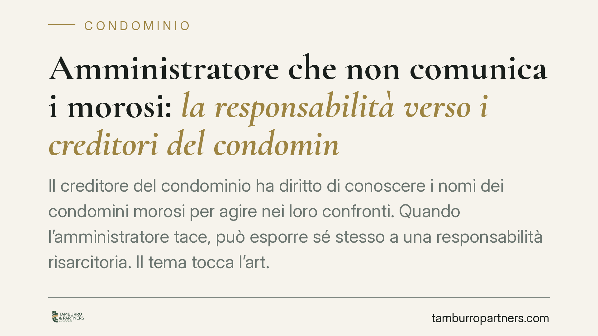
Il creditore del condominio ha diritto di conoscere i nomi dei condomini morosi per agire nei loro confronti. Quando l'amministratore tace, può esporre sé stesso a una responsabili…
La clausola che fa decadere dal diritto all'indennizzo chi denuncia il sinistro oltre trenta giorni è una clausola vessatoria: senza specifica approvazione per iscritto resta ineff…
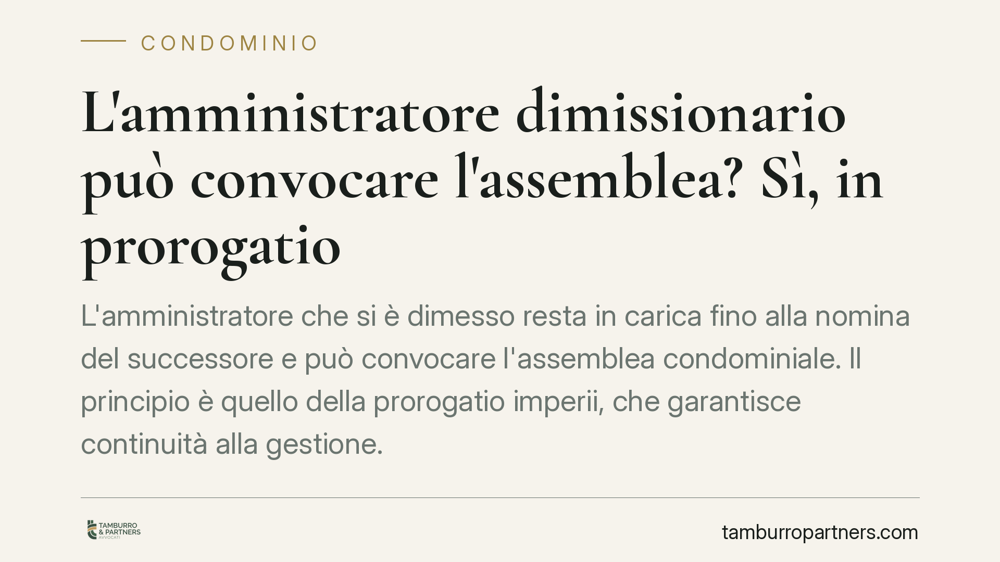
L'amministratore che si è dimesso resta in carica fino alla nomina del successore e può convocare l'assemblea condominiale. Il principio è quello della prorogatio imperii, che gara…
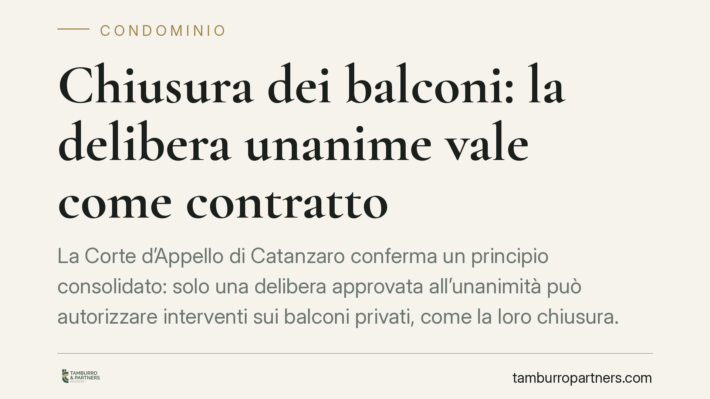
La Corte d'Appello di Catanzaro conferma un principio consolidato: solo una delibera approvata all'unanimità può autorizzare interventi sui balconi privati, come la loro chiusura. …
Chi abita ai piani bassi paga meno per l'autoclave che spinge l'acqua ai piani alti? No. Secondo l'orientamento consolidato della Cassazione, le spese dell'autoclave condominiale s…
La Cassazione torna sul cosiddetto mobbing orizzontale, cioè le condotte persecutorie messe in atto dai colleghi di lavoro. Il datore risponde del danno subito dal dipendente se, p…
Un dipendente che cade in una truffa informatica può perdere il posto? La questione tocca il perimetro dell'obbligo di diligenza sul lavoro. Chi gestisce dati e pagamenti risponde …
Il preposto è la figura che vigila sull'applicazione concreta delle misure di sicurezza nei luoghi di lavoro. Dopo la riforma del 2021 il suo ruolo è stato rafforzato, con obblighi…
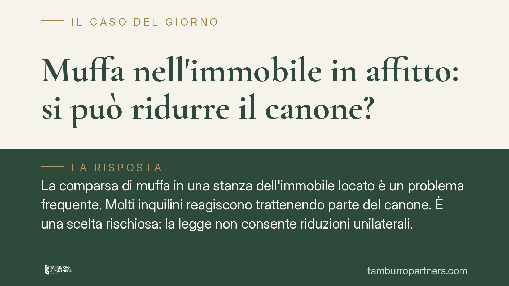
La comparsa di muffa in una stanza dell'immobile locato è un problema frequente. Molti inquilini reagiscono trattenendo parte del canone. È una scelta rischiosa: la legge non conse…
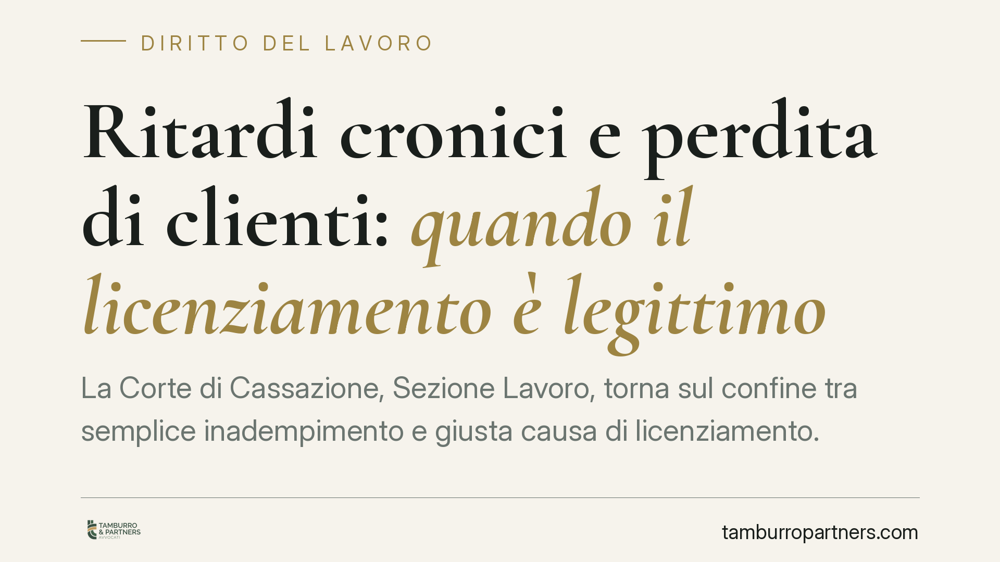
La Corte di Cassazione, Sezione Lavoro, torna sul confine tra semplice inadempimento e giusta causa di licenziamento. Ritardi ripetuti uniti alla violazione delle direttive tecnich…
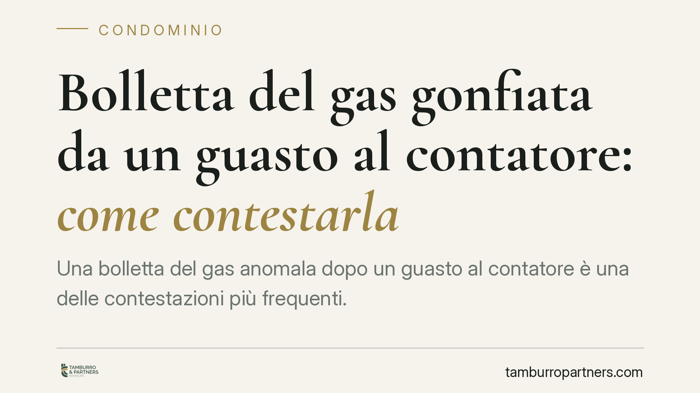
Una bolletta del gas anomala dopo un guasto al contatore è una delle contestazioni più frequenti. Il consumatore ha strumenti precisi per opporsi: reclamo scritto al fornitore, ric…
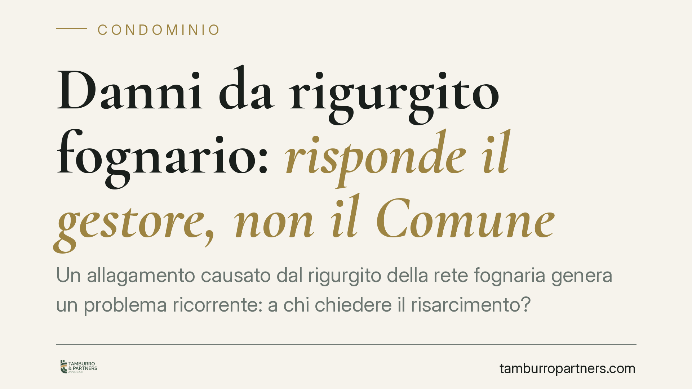
Un allagamento causato dal rigurgito della rete fognaria genera un problema ricorrente: a chi chiedere il risarcimento? La Cassazione chiarisce che risponde il gestore del sistema …
La Corte di Cassazione conferma che l'obbligo di fedeltà del lavoratore permane per tutta la durata del rapporto, anche in fase di cessazione. Un medico è stato condannato a risarc…
Chi concede gratuitamente un immobile a un familiare o a un conoscente si chiede spesso come rientrarne in possesso. La risposta dipende da un dettaglio decisivo: esiste un termine…
La più recente giurisprudenza di legittimità ha ribadito che i dividendi percepiti da un charitable trust estero non possono subire un prelievo più gravoso di quello riservato a un…
Il datore di lavoro non deve giustificare ogni scelta organizzativa. Ma quando promette avanzamenti secondo criteri prefissati e poi decide senza spiegazioni, la libertà si trasfor…
Un amministratore può impegnare il condominio con tecnici e professionisti per una ristrutturazione senza il via libera dell'assemblea? Una recente pronuncia del Tribunale di Tries…
La destinazione del TFR resta uno snodo decisivo nei primi mesi di rapporto. Il D.lgs. 252/2005 prevede che, in assenza di scelta espressa entro sei mesi dall'assunzione, il TFR ma…
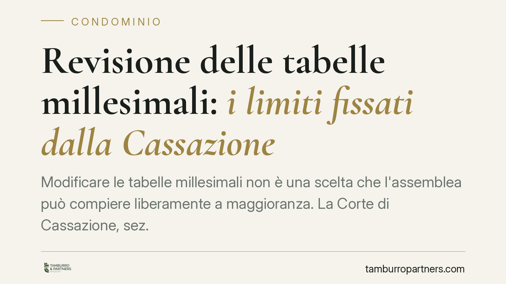
Modificare le tabelle millesimali non è una scelta che l'assemblea può compiere liberamente a maggioranza. La Corte di Cassazione, sez. II civile, ribadisce che la revisione richie…
Chi vive al piano terra crede spesso di essere esonerato dalle spese per le scale. Non è così. Le scale, anche esterne, sono bene comune e la loro manutenzione si ripartisce second…
Con i Bambini ha annunciato due nuovi progetti a sostegno dei minori orfani di femminicidio, nell'ambito del Fondo per il contrasto della povertà educativa minorile. Al di là dell'…
Il segreto sulle buste paga dei colleghi ha i giorni contati. La Direttiva UE 2023/970 sulla trasparenza retributiva impone alle aziende di comunicare le retribuzioni iniziali e co…
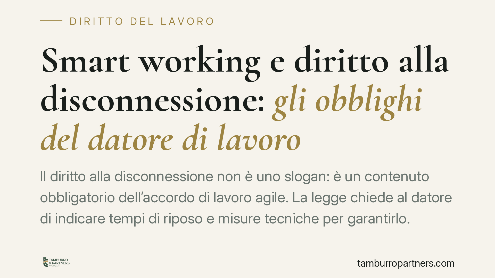
Il diritto alla disconnessione non è uno slogan: è un contenuto obbligatorio dell'accordo di lavoro agile. La legge chiede al datore di indicare tempi di riposo e misure tecniche p…
Le telecamere installate dai Comuni per la sicurezza urbana non possono trasformarsi in strumenti di controllo disciplinare del personale. Il principio, ribadito dall'Autorità Gara…
La provvigione all'agenzia immobiliare spetta quando l'intermediario ha reso possibile l'affare, anche se le parti concludono poi da sole. Il criterio decisivo è il nesso causale t…
Fondazione con il Sud avvia un bando destinato a organizzazioni di volontariato e associazioni di promozione sociale impegnate nelle aree interne del Mezzogiorno, per contrastare l…
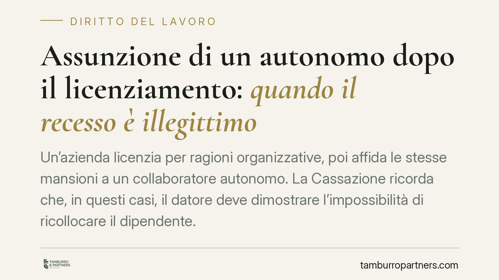
Un'azienda licenzia per ragioni organizzative, poi affida le stesse mansioni a un collaboratore autonomo. La Cassazione ricorda che, in questi casi, il datore deve dimostrare l'imp…
La Corte di Cassazione conferma che il licenziamento comunicato tramite email ordinaria è valido, anche quando il contratto collettivo richiede la Pec. Ciò che conta è la forma scr…
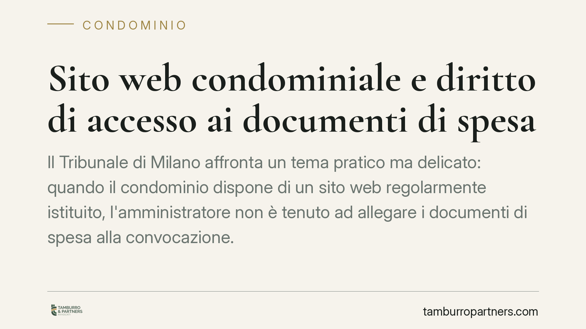
Il Tribunale di Milano affronta un tema pratico ma delicato: quando il condominio dispone di un sito web regolarmente istituito, l'amministratore non è tenuto ad allegare i documen…